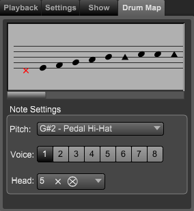

Track Inspector Panel - Track Drum Map Tab
Track Inspector Panel - Track Drum Map Tab
If the Track Inspector panel is not showing click on the Inspector button at top right of Control Bar or type "Shift-I" to open the panel.
If needed, click on the Track section at the top of the panel and then the Tuning tab.
Note: The Drum Map only appears on percussion type tracks.
The Drum Map tab area contains the current track's settings for remapping drum pitches to staff position, voice, and note heads.

Staff Design area. Use this area to drag each of the pitches to a staff position. When you click on a note head the pitch settings will appear below.